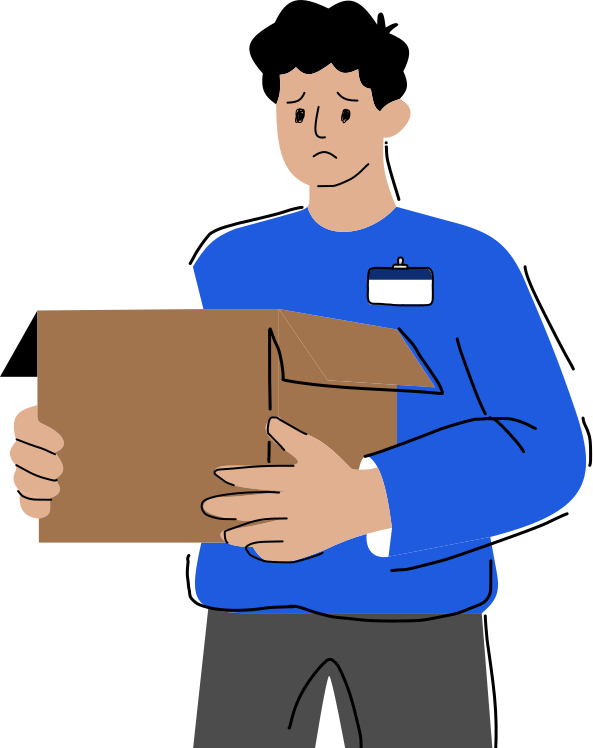
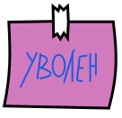
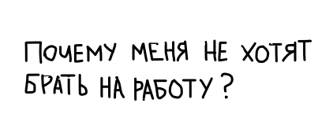
История о том, как Марк искал работу
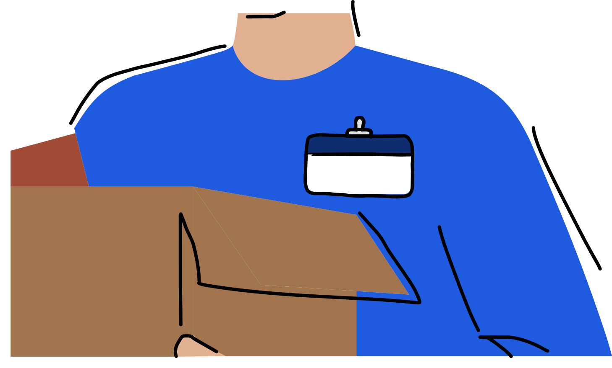
Марк, 23 года
Junior Frontend-разработчик
Опыт: 1 год
Статус: Уволен после сокращения штата
Спустя 2 месяца...
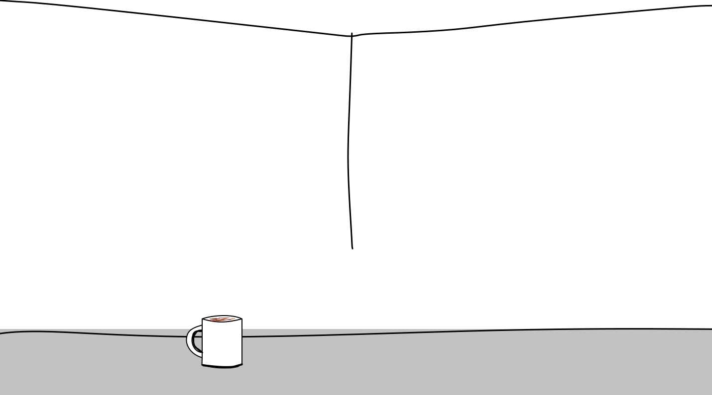
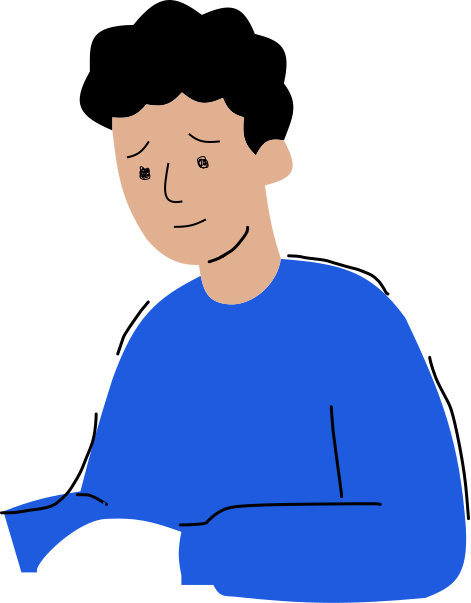
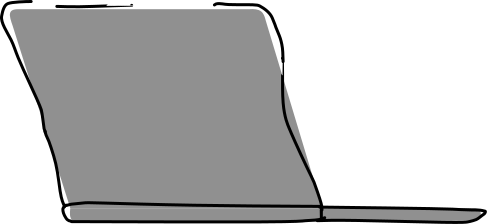
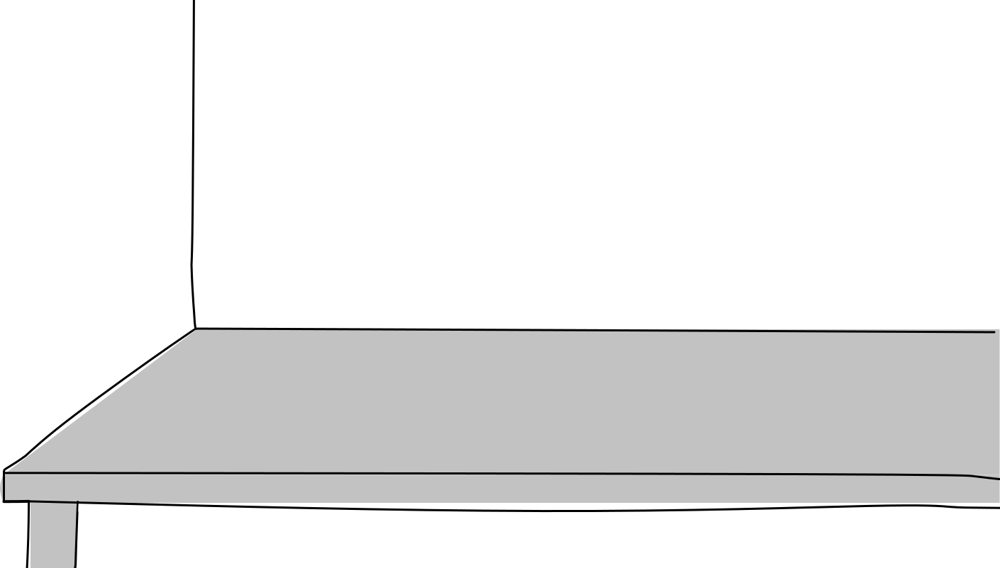
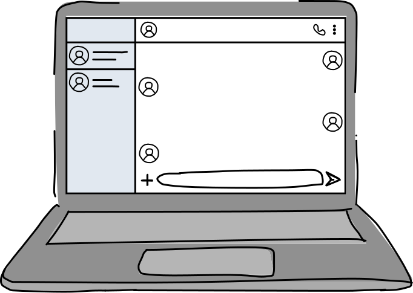
На следующий день:
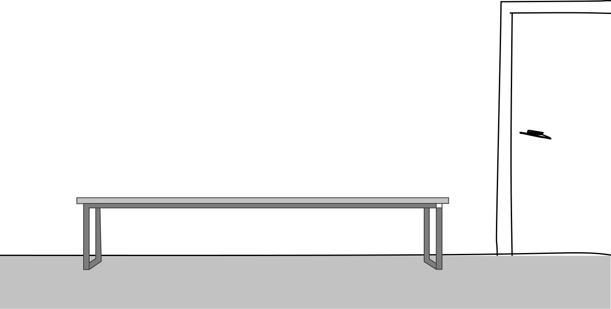
Нажмите на персонажа, чтобы узнать о нем больше
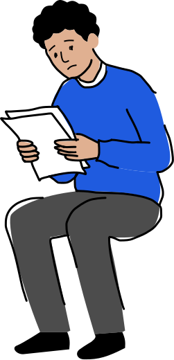
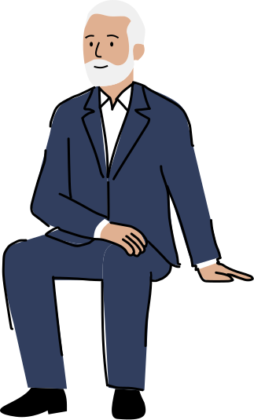
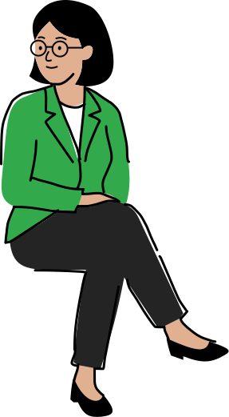
Специалист с 10-летним стажем
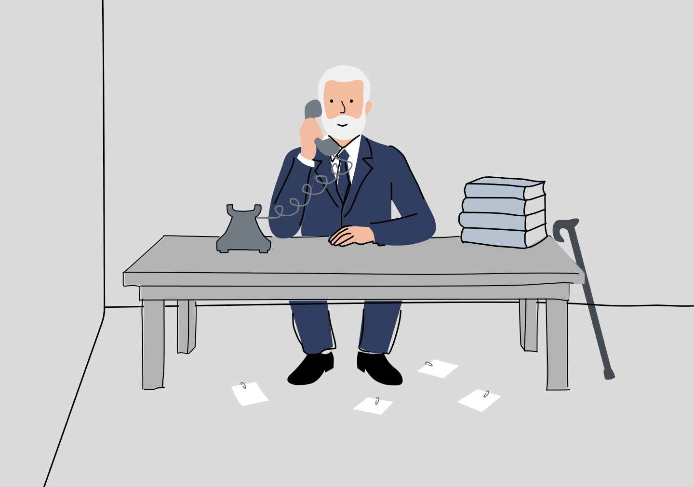
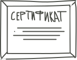
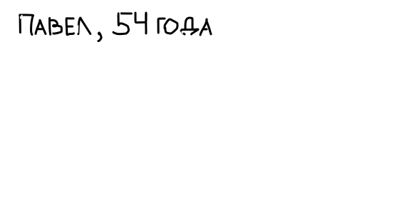
Претендует на позицию ведущего
аналитика данных после 10 лет
руководства в IT. Компании отказывают
из-за избыточной квалификации,
опасаясь потери мотивации на линейной
роли.
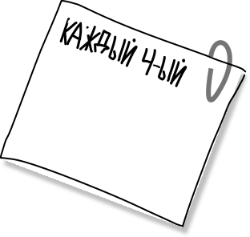
соискатель в России
получает отказ из-
за «слишком высокой
квалификации»
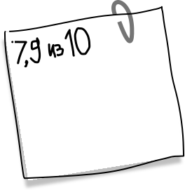
оценка сложности
поиска работы
для кандидатов
старше 50 лет —
максимум на рынке.
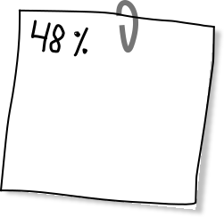
специалистов 50+
не видят для себя
вакансий, а 13%
скрывают возраст
в резюме.
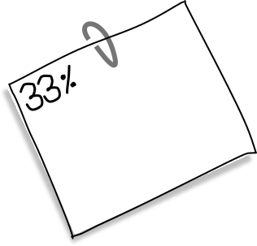
начальников боятся
брать сотрудников
старше себя
или с руководящим
опытом
Специалист после длительного перерыва
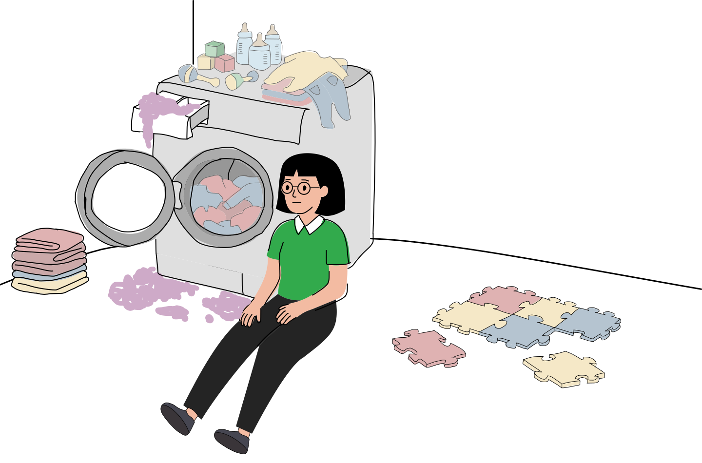
Планирует выйти в IT на начальную
позицию после трех лет декрета. При этом
работодатели настороженно относятся к
перерывам в стаже и опасаются
внезапных больничных у кандидата с
маленьким ребенком.
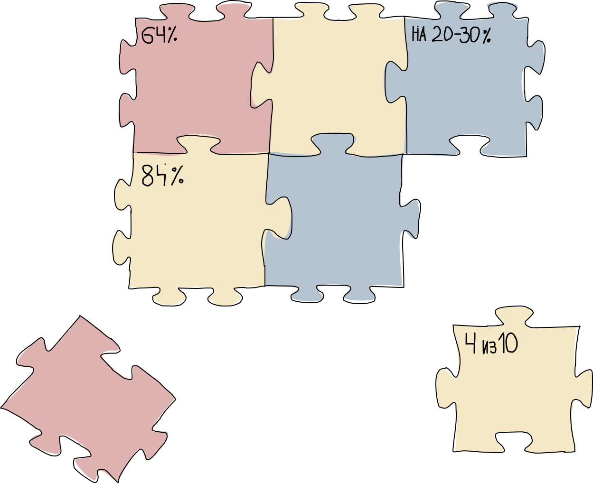
женщин, которые
находились или находятся
в декрете, проходили
различные
образовательные курсы
и программы,
чтобы сменить профессию
после выхода на работу.
мам после декрета ищут
работу исключительно
с гибким графиком
или удаленкой,
но на стартовых позициях
такие условия предлагают
редко.
ниже зарплатные
предложения получают
женщины при выходе
из декрета на новое место
по сравнению
с кандидатами
без перерыва в стаже
на той же стартовой роли.
женщин после
окончания декрета не
возвращаются на старое
место, а вынуждены
искать работу в новой
компании.
Начинающий специалист с годом стажа
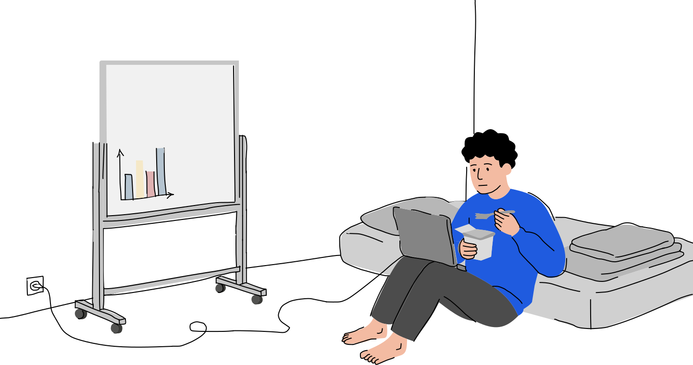
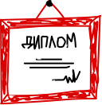
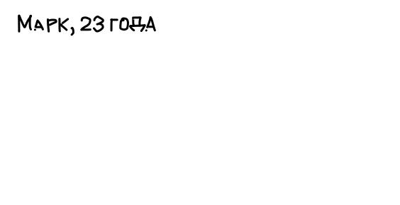
Фронтенд-разработчик с опытом
коммерческой работы один год, попавший под
сокращение штата. Даже на базовые позиции
компании формально требуют стаж от трех лет
и отсекают резюме новичков автоматическими
фильтрами.
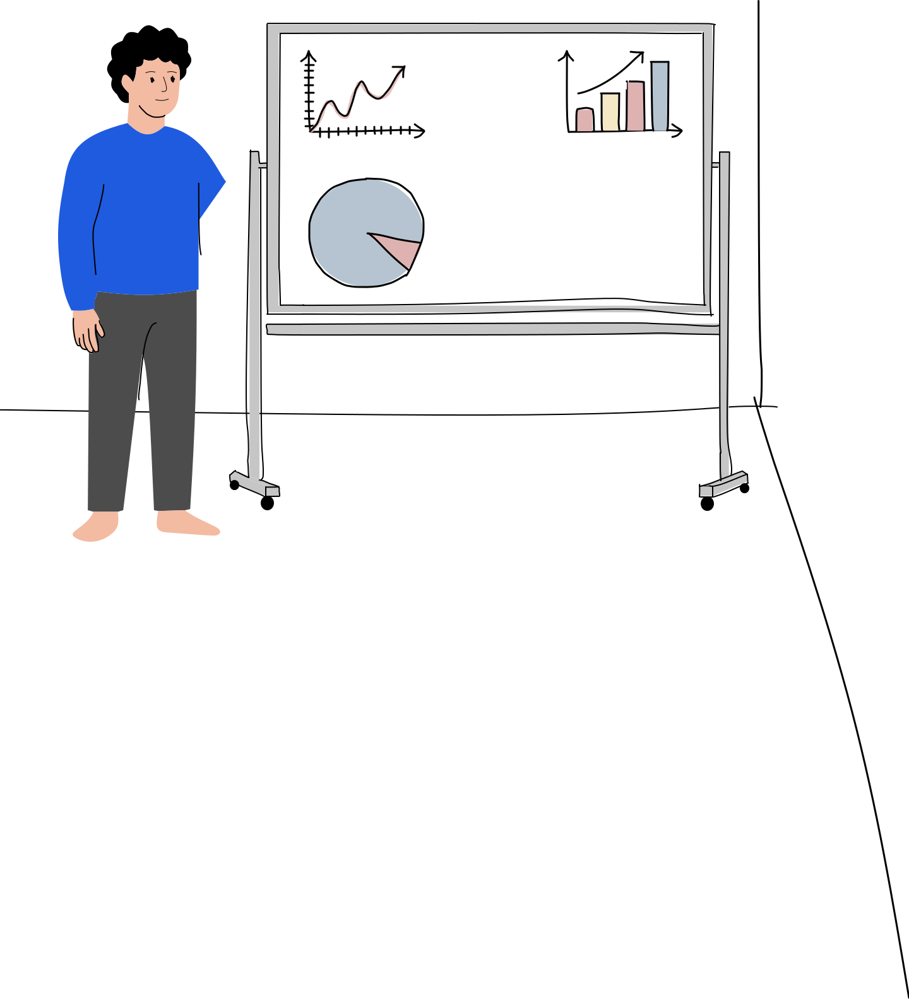
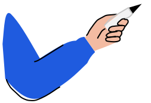
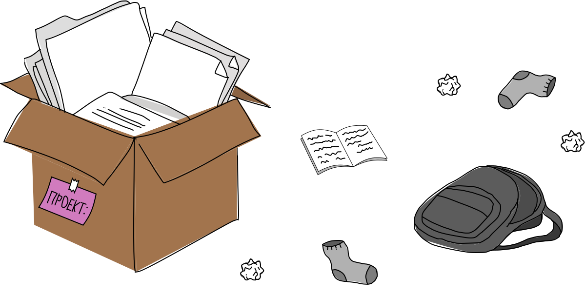
куратор:
Селезенева
Наталья